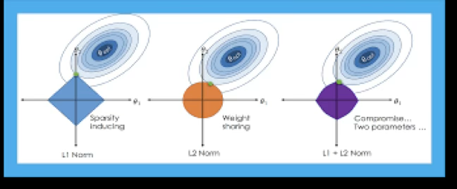
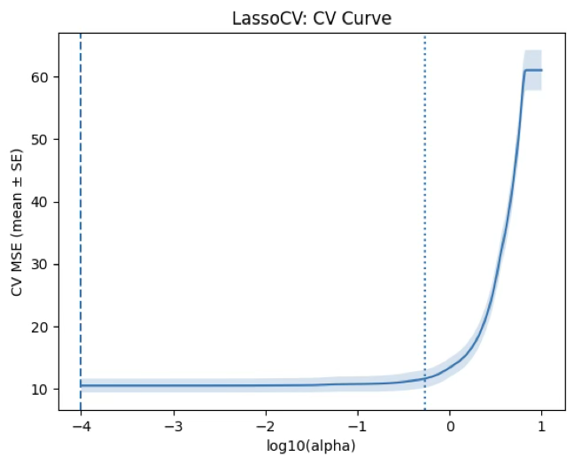

MLDL 예측방법. 3.규제 회귀분석
Chapter 3. 규제 회귀분석
1. 규제회귀 개념

변수선택 방법은 전체 설명변수들 중 일부만 포함한 선형모형을 최소제곱으로 적합하는 방식이다. 이에 대한 대안으로, p개의 모든 설명변수를 포함하되 계수 추정치에 제약 또는 규제를 가해, 계수들을 0 쪽으로 수축 시키는 방법을 사용할 수 있다.
처음에는 왜 이런 제약이 적합을 개선하는지 직관적으로 분명하지 않을 수 있으나, 계수를 0 방향으로 수축시키면 계수 추정 분산을 크게 줄일 수 있음이 알려져 있다. 0으로 수축시키는 대표적 방법이 Ridge 회귀와 Lasso이다.
OLS 한계
선형회귀는 잔차제곱합(SSE)을 최소화하는 계수 \(\beta_{0},\beta_{1},\ldots,\beta_{p}\)를 선택하는 방법이다.
\(SSE = \overset{n}{\sum_{i = 1}}\left( y_{i} - \beta_{0} - \overset{p}{\sum_{j = 1}}\beta_{j}x_{ij} \right)^{2}\). OLS는 단순하고 해석이 용이하지만, 다음 상황에서 예측이 불안정해지기 쉽다.
다중공선성이 큰 경우: \(X^{\top}X\)가 불안정해져 계수 추정 분산이 커지기 쉽다.
고차원(p가 크거나 \(p \geq n\))인 경우: OLS가 불안정하거나 해가 유일하지 않을 수 있다.
과적합이 발생하기 쉬운 경우: 훈련 데이터에는 잘 맞지만 새 데이터에서 오차가 커질 수 있다.
규제 회귀는 ”데이터 적합도”에 더해 ”계수의 복잡도”에 벌점(penalty)을 부여하여, 계수를 0 방향으로 수축시키는 방식이다. 일반형은 다음과 같다.
\(\widehat{\beta}(\lambda) = \arg\min_{\beta} \parallel y - X\beta \parallel^{2} + \lambda P(\beta),\lambda \geq 0\), 여기서 \(P(\beta)\)는 패널티 함수, \(\lambda\)는 규제 강도(tuning parameter)이다. \(\lambda\)가 커질수록 계수는 더 강하게 0 방향으로 수축되어 모형 복잡도가 줄어든다.
Bias–Variance trade-off 관점
규제의 핵심 목적은 분산(variance)을 줄이기 위해 편향(bias)을 일부 허용하는 데 있다. 일반적으로 \(\lambda\)를 증가시키면 분산은 감소하는 경향이 있고 편향은 증가하는 경향이 있다.
따라서 테스트 오차(예: MSE)는 \(\lambda\)에 대해 대개 ”그릇(U) 모양”을 보이며, 최적의 \(\lambda\)가 존재한다. 작은 \(\lambda\) 구간에서는 분산이 빠르게 줄어 테스트 오차가 감소할 수 있고, 너무 큰 \(\lambda\)에서는 편향이 커져 테스트 오차가 다시 증가한다는 그림(교재의 전형적 설명)이 이를 직관적으로 보여준다.
2. Ridge 회귀 (L2 규제)
패널티 함수 정의
Ridge 회귀는 최소제곱과 매우 유사하지만, 계수는 SSE가 아니라 다음 양을 최소화하여 구한다.
\(\overset{n}{\sum_{i = 1}}\left( y_{i} - \beta_{0} - \overset{p}{\sum_{j = 1}}\beta_{j}x_{ij} \right)^{2} + \lambda\overset{p}{\sum_{j = 1}}\beta_{j}^{2} = SSE + \lambda\overset{p}{\sum_{j = 1}}\beta_{j}^{2}\), 여기서 \(\lambda \geq 0\)는 튜닝 파라미터이다. 첫 항은 OLS와 마찬가지로 SSE를 작게 만들어 데이터를 잘 맞추려는 것이고, 둘째 항 \(\lambda\sum_{j}\beta_{j}^{2}\)는 수축 패널티로서 \(\beta_{1},\ldots,\beta_{p}\)가 0에 가까울수록 작아진다. 따라서 이 항은 \(\beta_{j}\)들이 0 쪽으로 수축되도록 만든다.
\(\lambda\)는 두 항의 상대적 영향력을 조절한다. \(\lambda = 0\)이면 패널티가 없어져 Ridge는 OLS와 같아지고, \(\lambda \rightarrow \infty\)이면 패널티 영향이 커져 Ridge 계수들은 0에 가까워진다. OLS가 단 하나의 계수해만 주는 것과 달리, Ridge는 \(\lambda\) 값마다 서로 다른 계수해 \({\widehat{\beta}}_{\lambda}^{R}\)를 낳는다. 그러므로 좋은 \(\lambda\)선택이 핵심이다.
절편 \(\beta_{0}\)는 왜 벌점에서 제외하는가
패널티는 \(\beta_{1},\ldots,\beta_{p}\)에 적용되며 절편 \(\beta_{0}\)에는 적용되지 않는다. 관심은 각 설명변수와 반응변수 사이의 연관(기울기)을 수축하는 것이지, ”모든 \(x_{ij} = 0\)“일 때의 평균 수준을 나타내는 절편까지 수축하고 싶지는 않기 때문이다.
설명변수들이 Ridge 적용 전에 평균 0이 되도록 중심화(centered)되어 있다고 가정하면, 절편 추정치는 \({\widehat{\beta}}_{0} = \overline{y} = \sum_{i}y_{i}/n\)형태가 된다.
동치 제약식(constrained form)
Ridge는 다음 제약식 문제와 동치이다.
\(\min_{\beta} \parallel y - X\beta \parallel^{2}\text{s.t.}\overset{p}{\sum_{j = 1}}\beta_{j}^{2} \leq s\). 어떤 \(\lambda\)에 대해 대응하는 s가 존재하여 같은 해를 준다. 이 관점에서 s는 ”계수 크기에 대한 예산”이며, Ridge는 L2-예산 안에서 SSE를 최소화하는 방법으로 해석된다.
표준화(Scaling)가 필수인 이유
OLS 계수는 스케일 등변성(scale equivariant) 을 가진다. 즉 어떤 예측변수 \(X_{j}\)를 상수 c배로 스케일링하면 OLS 계수 \({\widehat{\beta}}_{j}\)는 1/c 배로 변해, \(X_{j}{\widehat{\beta}}_{j}\)는 동일하게 유지된다는 성질이다.
하지만 Ridge는 \(\sum\beta_{j}^{2}\)항 때문에, 어떤 변수의 스케일을 바꾸면 계수해가 단순히 1/c로만 바뀌지 않고, \(X_{j}{\widehat{\beta}}_{j,\lambda}^{R}\) 자체가 \(\lambda\)뿐 아니라 변수들의 스케일에도 의존하게 된다. 심지어 다른 예측변수들의 스케일까지 영향을 줄 수 있다고 말한다.
그래서 Ridge는 예측변수들을 표준화한 뒤 적용하는 것이 좋다.
\[{\overset{˜}{x}}_{ij} = \frac{x_{ij}}{\sqrt{\frac{1}{n}\sum_{i = 1}^{n}(x_{ij} - {\overline{x}}_{j})^{2}}}\]
분모는 j번째 예측변수의 (표본)표준편차이므로 표준화된 예측변수들은 표준편차가 1이 된다. 그 결과 최종 적합은 예측변수 측정 단위(스케일)에 의존하지 않게 된다.
Ridge가 OLS보다 나아질 수 있는 이유
Ridge의 장점은 편향–분산 트레이드오프에서 나온다. \(\lambda\)가 커질수록 Ridge 적합의 유연성은 감소하여 분산은 감소하고 편향은 증가한다.
- \(\lambda = 0\): (OLS에 해당)에서는 편향은 없지만 분산이 크다.
- \(\lambda\)를 증가시키면 계수 수축으로 예측의 분산이 크게 줄어들고, 편향은 약간 증가한다.
- 테스트 MSE는 대략 ”분산 + 편향제곱”과 관련되므로, \(\lambda\)가 0에서 10 정도까지는 분산이 빠르게 줄고 편향 증가는 작아서 MSE가 크게 감소한다.
- 더 큰 \lambda에서는 분산 감소가 둔화되는 반면, 계수들이 과도하게 과소추정되어 편향이 크게 증가하고 MSE가 다시 커진다. 예시에서는 \lambda\approx 30에서 MSE가 최소가 된다고 설명한다.
- 흥미롭게도, \lambda=0일 때(OLS)의 높은 분산 때문에 테스트 MSE가, \lambda=\infty인 영모형(null model)의 MSE와 거의 비슷할 정도로 커질 수 있다고 언급한다. 그러나 중간 정도 \lambda에서는 MSE가 훨씬 낮아질 수 있다는 점을 강조한다.

3. Lasso 회귀 (L1 규제)
Ridge의 단점: 변수 선택을 못함
Ridge의 분명한 단점은, best subset/전진·후진 선택처럼 보통 일부 변수만 포함하는 모형을 선택하지 않고 항상 p개 모든 변수를 포함한다는 점이다. \(\lambda\sum\beta_{j}^{2}\) 패널티는 계수를 0 쪽으로 줄이지만, \(\lambda = \infty\)가 아닌 한 계수를 정확히 0으로 만들지는 못한다. 예측 정확도에는 문제가 없을 수 있지만, p가 큰 경우에는 해석이 어려워질 수 있다.
중요한 변수처럼 보이는 설명변수들만으로 모형을 만들고 싶을 수 있지만, Ridge는 고려한 전체 설명변수를 모두 포함한 모형만을 만들 수 있다.
패널티 함수 정의
Lasso는 이 단점을 보완하는 비교적 최근의 대안으로 계수의 절댓값 합에 벌점을 주는 방법이다. Lasso 계수 \({\widehat{\beta}}_{\lambda}^{L}\)는 다음을 최소화한다.
\[\overset{n}{\sum_{i = 1}}\left( y_{i} - \beta_{0} - \overset{p}{\sum_{j = 1}}\beta_{j}x_{ij} \right)^{2} + \lambda\overset{p}{\sum_{j = 1}}|\beta_{j}| = SSE + \lambda\overset{p}{\sum_{j = 1}}|\beta_{j}|\]
동치 제약식
Lasso는 다음 제약식 문제와 동치이다.
\(\min_{\beta} \parallel y - X\beta \parallel^{2}\text{s.t.}\overset{p}{\sum_{j = 1}}|\beta_{j}| \leq s\), 여기서 \(\lambda\)와 s는 1:1로 대응하며 같은 해를 준다. 이 또한 ”L1-예산 안에서 RSS 최소화”라는 직관을 제공한다.
계수를 정확히 0으로 만들어 변수 선택 수행
Lasso도 계수를 0 쪽으로 수축하지만, L1 패널티는 \(\lambda\)가 충분히 크면 일부 계수들을 정확히 0으로 강제한다. 따라서 Lasso는 best subset selection처럼 변수 선택을 수행한다. 그 결과 Lasso가 만드는 모형은 Ridge보다 일반적으로 해석이 쉽다.
부분집합 선택과의 연결(L0 제약)
”0이 아닌 계수 개수”를 직접 제한하는 제약 \(\overset{p}{\sum_{j = 1}}I(\beta_{j} \neq 0) \leq s\)은 최적 변수선택과 사실상 같은 문제이다. 다만 이는 조합적 탐색을 요구하므로 p가 크면 계산이 급격히 어려워진다. Ridge/Lasso는 이 난문제를 풀기 쉬운 L2/L1 제약으로 바꾼 ”계산 가능한 대안”으로 이해할 수 있다. 특히 Lasso는 계수를 0으로 만들므로 subset selection과 더 가깝다.
왜 Lasso는 0을 만드는가: 기하학적 직관
제약식 관점에서 Ridge의 제약영역은 원(구) 형태로 ”모서리”가 없다. 반면 Lasso의 제약영역은 마름모(다면체) 형태로 축 방향에 뾰족한 꼭짓점(corner)이 존재한다. RSS의 등고선(타원)이 제약영역과 접하는 점이 꼭짓점에 걸릴 가능성이 커서, 그 결과 \beta_j=0이 쉽게 발생한다는 것이 표준 직관이다.
간단한 특수 경우에서의 수축 형태: Ridge vs Lasso
서로 직교하는 매우 단순한 상황에서(교재의 ”simple special case”), Ridge와 Lasso의 수축 방식 차이가 식으로 명확해진다.
- Ridge는 계수를 비율로 연속적으로 줄이는 형태를 갖는다(예: \(1/(1 + \lambda)\)꼴).
- Lasso는 계수를 \(\frac{\lambda}{2}\)만큼 당기고, 절댓값이 작으면 0으로 만드는 soft-thresholding 형태를 갖는다.
\[{\widehat{\beta}}_{j}^{L} = \{\begin{matrix} y_{j} - \lambda/2 & (y_{j} > \lambda/2) \\ y_{j} + \lambda/2 & (y_{j} < - \lambda/2) \\ 0 & (|y_{j}| \leq \lambda/2) \end{matrix}\]
이 식은 ”Lasso가 왜 0을 만드는가”를 수식으로도 설명해준다.
4. Elastic Net(혼합 규제)
Elastic Net을 쓰는 이유: Ridge와 Lasso의 빈틈 메우기
Elastic Net은 ”희소성(sparsity)“과 ”안정성(stability)”을 동시에 노리는 절충안이다. Ridge는 계수를 부드럽게 줄여 분산을 낮추지만, 보통 계수가 정확히 0이 되지 않아 변수 선택이 어렵다.
Lasso는 계수를 0으로 만들어 변수 선택이 가능하지만, 설명변수 간 상관이 강하면 선택이 불안정해질 수 있다(데이터 분할에 따라 다른 변수 하나가 선택되는 현상).
Elastic Net은 L1로 희소성을 만들면서, L2 성분으로 상관된 변수군을 ”묶어서” 유지하는 경향(그룹 효과)을 강화해 선택 불안정을 완화한다.
패널티 함수 정의
Elastic Net은 Ridge(L2)와 Lasso(L1)를 혼합한다.
\[\min_{\beta} \parallel y - X\beta \parallel^{2} + \lambda((1 - \alpha) \parallel \beta \parallel_{2}^{2} + \alpha \parallel \beta \parallel_{1})\]
- \(\lambda\): 전체 규제의 ”세기”를 조절하는 노브이다. 클수록 더 강하게 수축한다.
- \(\alpha\): ”희소성 vs 안정성”의 비율을 정하는 노브이다.
- \(\alpha \uparrow\): Lasso 성향 증가(더 희소, 더 공격적 선택)
- \(\alpha \downarrow\): Ridge 성향 증가(더 안정적, 덜 희소)
실무적으로는 \(\alpha\)를 몇 개 후보로 두고(예: 0.1, 0.3, 0.5, 0.7, 0.9), 각 \(\alpha\)마다 최적 \(\lambda\)를 CV로 찾는 방식이 일반적이다.
\(\lambda,\alpha\) 선택: 교차검증(CV) 표준 절차
Elastic Net은 튜닝 파라미터가 하나가 아니라 \((\lambda,\alpha)\) 두 개이다. 따라서 다음 절차가 깔끔하다.
1. 표준화: 규제 회귀는 스케일에 민감하므로 X는 평균 0, 분산 1로 표준화하는 것이 원칙이다(절편은 패널티 제외).
2. \(\alpha\) 후보 그리드 설정: \alpha\in\{0.1,0.3,0.5,0.7,0.9\} 등.
3. 각 \(\alpha\)에 대해 \(\lambda\) 그리드(보통 로그 스케일)를 두고 K-fold CV 수행.
4. 전체 후보 중 CV 오차가 최소인 (\(\widehat{\alpha},\widehat{\lambda}\))를 선택.
5. 선택된 값으로 전체 훈련 데이터에 재적합 하여 최종모형을 얻는다.
보고할 때는 보통 \(\lambda_{\min}\)(CV 최소)와 \(\lambda_{1\text{SE}}\)(1-SE 규칙) 중 무엇을 택했는지도 함께 적는다. \(\lambda_{1\text{SE}}\)는 성능 손실을 거의 늘리지 않으면서 더 단순한 모형(더 강한 규제)을 주는 경우가 많다.
해석 및 주의사항
Elastic Net 계수는 ”예측을 위한 최적화 결과”이며, OLS처럼 표준오차/유의확률 해석을 그대로 붙이기 어렵다.
해석은 보통 선택된 변수(0이 아닌 계수), 계수의 상대적 크기와 방향, 예측 성능(CV/테스트 성능) 중심으로 수행하는 것이 안전하다.
변수 선택의 안정성이 중요하면, 반복 CV(또는 여러 seed)로 ”선택 빈도”를 함께 점검하는 것이 도움이 된다.
언제 Elastic Net을 기본값으로 쓰는가
다음 조건 중 하나라도 강하면, Lasso 단독보다 Elastic Net이 기본 선택이 되기 쉽다.
- 설명변수들 간 상관이 강한 경우(변수군 존재)
- 원-핫 인코딩 등으로 유사 더미변수 집합이 큰 경우
- p가 크고(고차원) ”희소성 + 안정성”을 동시에 원할 때
- Lasso가 fold마다 선택 변수가 크게 흔들릴 때
5. 사례분석
데이터 개요
연비 mpg(연속형)를 예측하는 회귀 문제로 mpg는 값이 클수록 연비가 좋다는 것을 의미한다.
크기와 구조: 392개 관측치 × 9개 변수, 이는 df = df.dropna()로 결측이 있는 행을 제거한 결과
반응변수(Y): mpg
설명변수(X): cylinders, displacement, horsepower, weight, acceleration, model_year, origin, (name)
더미설명변수: cyl_group: cyl_34-203, cyl_8 -103, cyl_56-86 | origin: usa-245, japan-79, europe-68
import numpy as np
import pandas as pd
import seaborn as sns
# =========================
# 0) 데이터 불러오기 (가장 간단)
# =========================
df = sns.load_dataset("mpg") # Auto MPG (Seaborn 내장 데이터)
# 필요시 결측 제거(특히 horsepower에 결측이 있는 경우가 흔함)
df = df.dropna()
# =========================
# 1) cylinders -> 3개 그룹
# =========================
df["cyl_group"] = np.select(
[
df["cylinders"].isin([3, 4]),
df["cylinders"].isin([5, 6]),
df["cylinders"].eq(8),
],
["cyl_34", "cyl_56", "cyl_8"],
default="other" # 문자열로 통일(에러 방지)
)
# 혹시 other가 있으면 확인(필요 시 제거)
if (df["cyl_group"] == "other").any():
print("⚠️ 그룹에 안 들어간 cylinders 값:", sorted(df.loc[df["cyl_group"]=="other","cylinders"].unique()))
# 필요하면 다음 줄로 제거
# df = df.loc[df["cyl_group"] != "other"].copy()
# =========================
# 2) origin 값 정리(혹시 1/2/3 코드인 경우 대비)
# =========================
origin_map = {1: "usa", 2: "europe", 3: "japan"}
tmp = pd.to_numeric(df["origin"], errors="coerce")
if tmp.notna().all(): # 전부 숫자로 변환되면(=1/2/3 코딩)
df["origin"] = tmp.astype(int).map(origin_map).astype("object")
# =========================
# 3) 더미변수(0/1) 생성 후 df에 붙이기
# =========================
cyl_dum = pd.get_dummies(df["cyl_group"], dtype=int).drop(columns=["other"], errors="ignore")
origin_dum = pd.get_dummies(df["origin"], prefix="origin", dtype=int)
df = pd.concat([df, cyl_dum, origin_dum], axis=1)
# 확인
print(df.info())<class 'pandas.core.frame.DataFrame'>
Index: 392 entries, 0 to 397
Data columns (total 16 columns):
0 mpg 392 non-null float64
1 cylinders 392 non-null int64
2 displacement 392 non-null float64
3 horsepower 392 non-null float64
4 weight 392 non-null int64
5 acceleration 392 non-null float64
6 model_year 392 non-null int64
7 origin 392 non-null object
8 name 392 non-null object
9 cyl_group 392 non-null object
10 cyl_34 392 non-null int64
11 cyl_56 392 non-null int64
12 cyl_8 392 non-null int64
13 origin_europe 392 non-null int64
14 origin_japan 392 non-null int64
15 origin_usa 392 non-null int64
(1) RIDGE 규제
import numpy as np
import pandas as pd
from sklearn.model_selection import KFold, train_test_split
from sklearn.pipeline import Pipeline
from sklearn.preprocessing import StandardScaler
from sklearn.linear_model import RidgeCV, Ridge
from sklearn.metrics import mean_squared_error, r2_score
# =========================
# 0) y, X 구성
# =========================
y = df["mpg"].values
# 연속형(필요시 추가/삭제)
num_cols = ["displacement", "horsepower", "weight", "acceleration", "model_year"]
# 더미(현재 df에 붙여둔 컬럼 기준)
cyl_dummy_cols = [c for c in ["cyl_56", "cyl_8"] if c in df.columns]
origin_dummy_cols = [c for c in df.columns if c.startswith("origin_") and c != “origin_usa”]
feature_cols = num_cols + cyl_dummy_cols + origin_dummy_cols
X = df[feature_cols].values
# =========================
# 1) RidgeCV: alpha(=lambda) 선택
# =========================
alphas = np.logspace(-3, 3, 200) # lambda 후보(로그스케일)
cv = KFold(n_splits=10, shuffle=True, random_state=42)
ridge_cv = Pipeline([
("scaler", StandardScaler()), # 규제회귀는 스케일에 민감 → 표준화
("ridge", RidgeCV(alphas=alphas, cv=cv))
])
ridge_cv.fit(X, y)
best_alpha = ridge_cv.named_steps["ridge"].alpha_
print("✅ Best alpha (lambda):", best_alpha)
# 계수 확인(절댓값 큰 순)
coef = ridge_cv.named_steps["ridge"].coef_
coef_s = pd.Series(coef, index=feature_cols).sort_values(key=np.abs, ascending=False)
print("\n=== Ridge Coefficients (sorted by |coef|) ===")
print(coef_s)
# =========================
# 2) (선택) 홀드아웃 테스트 성능 확인
# =========================
X_train, X_test, y_train, y_test = train_test_split(
X, y, test_size=0.2, random_state=42
)
ridge_final = Pipeline([
("scaler", StandardScaler()),
("ridge", Ridge(alpha=best_alpha))
])
ridge_final.fit(X_train, y_train)
# 예측
pred = ridge_final.predict(X_test)
# ✅ RMSE 계산(버전 호환)
mse = mean_squared_error(y_test, pred)
rmse = np.sqrt(mse)
# R^2
r2 = r2_score(y_test, pred)
print("\n=== Hold-out Test Performance ===")
print("RMSE:", rmse)
print("R^2 :", r2)Best alpha (lambda) = 1.1098 의 의미
RidgeCV가 10-fold CV로 검증오차가 가장 작아지는 규제 강도 \(\lambda\)를 고른 값이다.
\(\lambda\)가 0이면 OLS(규제 없음), 값이 커질수록 계수 수축이 강해져 분산이 줄고(안정화), 편향이 늘 수 있다.
1.11 정도는 ”과도하게 크지도, 0에 가깝지도 않은” 중간 수준 규제로 보는 게 자연스럽다.
Ridge 계수 해석(중요: 표준화된 계수)
현재 파이프라인에 StandardScaler()가 들어가 있으므로, 계수 크기는 ”원 단위”가 아니라 표준화된 단위(1 표준편차 변화) 기준이다. 따라서 절댓값이 큰 계수일수록 상대적으로 영향력이 큰 변수로 해석하는 게 적절하다.
- weight = -5.0235 → 가장 큰 영향 변수이다. 다른 조건이 같을 때 차량 무게가 증가하면 mpg가 크게 감소하는 방향이다. 연비는 무게에 매우 민감하다는 결과이다.
- model_year = +2.7744 → 연식이 최신일수록 mpg가 증가하는 방향이다. 기술발전/규제 강화로 연비가 개선되는 경향과 일치하는 결과이다.
- displacement = +2.1763, horsepower = -1.4274 → 배기량은 양(+)인데 마력은 음(-)으로 나온다. 이 조합이 ”이상”인 것은 아니다. 배기량·마력·무게·실린더는 서로 강하게 상관된 변수들이고, Ridge는 상관된 변수들 사이에서 계수 크기를 분산시켜 안정화한다. 따라서 이 계수들은 ”단독 인과효과”라기보다 다른 변수들을 통제한 조건부 효과로 해석하는 것이 안전하다.
- acceleration = +0.1980 → 영향이 상대적으로 작다. 예측에 기여는 하지만 핵심 변수는 아니다.
- cyl_34가 기준범주(reference) 로 설정된 상태이다.
- cyl_56 = -1.2844 → 같은 조건에서 5~6기통 차량은 (3~4기통 기준 대비) mpg가 낮아지는 방향이다.
- cyl_8 = -0.5720 → 같은 조건에서 8기통은 (3~4기통 기준 대비) mpg가 낮아지는 방향이다.
- 해석상 ”기통이 커질수록 연비가 나빠진다”는 전형적 패턴과 부합한다.
- origin_usa가 기준범주이다. 따라서 아래 계수는 모두 ”미국 대비 차이”로 해석된다.
- origin_japan = +0.9764 → 같은 조건에서 일본 차량은 미국 차량보다 mpg가 높아지는 경향이다.
- origin_europe = +0.7943 → 같은 조건에서 유럽 차량은 미국 차량보다 mpg가 높아지는 경향이다. -즉, 원산지 효과는 ”일본 > 유럽 > 미국(기준)” 순으로 연비가 높게 나타난다는 결론이다(조건부 비교).
홀드아웃 테스트 성능 해석
- RMSE = 3.0714 → 테스트셋에서 평균적으로 약 3.07 mpg 정도의 예측오차가 발생한다는 뜻이다.
- \(R^{2} = 0.8152\) → 테스트셋 mpg 변동의 약 81.5%를 설명하는 성능이다. 이 데이터에서는 꽤 양호한 예측력이다.
종합 결론
교차검증으로 선택된 Ridge(\(\lambda \approx 1.11\))는 과도한 과적합 없이 안정적 예측을 제공하는 설정이다. 표준화 계수 기준으로 무게(weight)가 연비를 가장 강하게 저하시켰고, 연식(model_year)은 연비를 유의미하게 향상시키는 방향이다. 범주형 변수는 기준범주 대비로 해석되며, (3~4기통 대비) 5~6기통과 8기통은 연비를 낮추고, 미국 대비 일본/유럽 원산지가 연비를 높이는 경향이 나타난다. 테스트 성능은
\(R^{2} \approx 0.82\), \(RMSE \approx 3.07\)로 양호한 수준이다.
✅ Best alpha (lambda): 1.1097524964120722
=== Ridge Coefficients (sorted by |coef|) ===
weight -5.023513
model_year 2.774390
displacement 2.176345
horsepower -1.427419
cyl_56 -1.284396
origin_japan 0.976411
origin_europe 0.794321
cyl_8 -0.571972
acceleration 0.198026
=== Hold-out Test Performance ===
RMSE: 3.0714161568847045
R^2 : 0.8151745805011831
(2) LASSO 규제
import numpy as np
import pandas as pd
from sklearn.model_selection import KFold, train_test_split
from sklearn.pipeline import Pipeline
from sklearn.preprocessing import StandardScaler
from sklearn.linear_model import LassoCV, Lasso
from sklearn.metrics import mean_squared_error, r2_score
# =========================
# 0) y, X 구성
# =========================
y = df["mpg"].values
num_cols = ["displacement", "horsepower", "weight", "acceleration", "model_year"]
# 더미(현재 df에 붙여둔 컬럼 기준) - 현재 노트북과 동일
cyl_dummy_cols = [c for c in ["cyl_56", "cyl_8"] if c in df.columns]
origin_dummy_cols = [c for c in df.columns if c.startswith("origin_") and c != "origin_usa"]
feature_cols = num_cols + cyl_dummy_cols + origin_dummy_cols
X = df[feature_cols].values
# =========================
# 1) LassoCV: alpha(=lambda) 선택
# =========================
alphas = np.logspace(-3, 1, 200) # Lasso는 너무 큰 alpha면 전부 0 될 수 있어 범위 좁게 시작(필요시 조정)
cv = KFold(n_splits=10, shuffle=True, random_state=42)
lasso_cv = Pipeline([
("scaler", StandardScaler()),
("lasso", LassoCV(alphas=alphas, cv=cv, max_iter=20000))
])
lasso_cv.fit(X, y)
best_alpha = lasso_cv.named_steps["lasso"].alpha_
print("✅ Best alpha (lambda):", best_alpha)
# 계수 확인(절댓값 큰 순) + 0 아닌 변수 개수
coef = lasso_cv.named_steps["lasso"].coef_
coef_s = pd.Series(coef, index=feature_cols).sort_values(key=np.abs, ascending=False)
print("\n=== Lasso Coefficients (sorted by |coef|) ===")
print(coef_s)
nz = np.sum(coef != 0)
print(f"\n✅ Non-zero coefficients: {nz} / {len(coef)}")
# =========================
# 2) (선택) 홀드아웃 테스트 성능 확인
# =========================
X_train, X_test, y_train, y_test = train_test_split(
X, y, test_size=0.2, random_state=42
)
lasso_final = Pipeline([
("scaler", StandardScaler()),
("lasso", Lasso(alpha=best_alpha, max_iter=20000))
])
lasso_final.fit(X_train, y_train)
pred = lasso_final.predict(X_test)
mse = mean_squared_error(y_test, pred)
rmse = np.sqrt(mse)
r2 = r2_score(y_test, pred)
print("\n=== Hold-out Test Performance ===")
print("RMSE:", rmse)
print("R^2 :", r2)\(\lambda = 0.001\) 의미
교차검증이 선택한 \(\lambda\)가 그리드의 최솟값(0.001) 이다. 이는 ”규제를 거의 걸지 않는 쪽(OLS에 가까운 쪽)“이 검증오차를 가장 줄였다는 뜻이다.
즉, 현재 데이터/변수구성에서는 강한 희소화(변수 제거)가 도움이 되지 않았다는 신호이다.
Non-zero coefficients: 9 / 9 해석(중요)
Lasso의 특징은 계수를 0으로 만들며 변수선택을 한다는 점인데, 여기서는 9개 계수가 전부 0이 아니다. 따라서 이번 적합은 변수선택이 발생하지 않은 Lasso이며, 사실상 OLS/Ridge(약한 규제)와 매우 비슷한 해이다.
계수의 방향과 상대적 중요도(표준화 기준)
StandardScaler()가 들어가 있으므로 계수는 표준화된 입력(1 표준편차 증가) 기준이다.
- weight = -5.19 : 가장 지배적인 변수이며, 무게가 증가하면 mpg가 크게 감소하는 방향이다.
- model_year = +2.79 : 연식이 최신일수록 mpg가 증가하는 방향이다.
- displacement = +2.41, horsepower = -1.42 : 강한 상관(다중공선성) 속에서 조건부 효과로 추정된 값이므로, 단일 계수의 인과 해석은 주의가 필요하다.
- cyl_56 = -1.30, cyl_8 = -0.62 : 기준범주(보통 cyl_34) 대비 연비가 낮아지는 방향이다.
- origin_japan = +0.99, origin_europe = +0.82 : 기준범주(USA) 대비 연비가 높아지는 방향이다.
- acceleration = +0.23 : 영향은 상대적으로 작다.
예측 성능 해석 + Ridge와 비교
RMSE ≈ 3.063, \(R^{2} \approx 0.816\) Ridge 결과(RMSE≈3.071, \(R^{2} \approx 0.815\)와 거의 동일하다. 결론적으로, 이 데이터/변수셋에서는 Lasso가 ”단순화(변수 제거)“라는 추가 이점을 주지 못했고, 예측도 Ridge와 비슷한 수준이다.
Lasso에서 ”진짜 변수선택”이 나오는지 확인하는 방법
현재는 \(\lambda\)가 너무 작게 선택되어 희소화가 안 된 상태이므로, 아래 중 하나를 해보면 교육적으로도 좋다. \(\lambda\) 범위를 더 넓히기(특히 더 크게): alphas = np.logspace(-4, 1, 400) 또는 np.logspace(-3, 2, 400) 또는 LassoCV(alphas=None)로 두고 sklearn이 자체 그리드를 잡게 하기
import numpy as np
import pandas as pd
import matplotlib.pyplot as plt
from sklearn.model_selection import KFold
from sklearn.preprocessing import StandardScaler
from sklearn.linear_model import LassoCV, lasso_path
# =========================
# 0) y, X 구성 (현재 노트북과 동일한 피처 구성)
# =========================
y = df["mpg"].values
num_cols = ["displacement", "horsepower", "weight", "acceleration", "model_year"]
cyl_dummy_cols = [c for c in ["cyl_56", "cyl_8"] if c in df.columns]
origin_dummy_cols = [c for c in df.columns if c.startswith("origin_") and c != "origin_usa"]
feature_cols = num_cols + cyl_dummy_cols + origin_dummy_cols
X = df[feature_cols].values
# =========================
# 1) 표준화 (계수/경로는 표준화 스케일 기준으로 해석됨)
# =========================
scaler = StandardScaler()
Xs = scaler.fit_transform(X)
# =========================
# 2) (1) CV 곡선: LassoCV 적합
# =========================
alphas_grid = np.logspace(-4, 1, 300) # 필요시 범위 조정
cv = KFold(n_splits=10, shuffle=True, random_state=42)
lasso_cv = LassoCV(
alphas=alphas_grid,
cv=cv,
max_iter=50000
)
lasso_cv.fit(Xs, y)
alphas_cv = lasso_cv.alphas_ # 보통 큰 값 -> 작은 값(내림차순)
mse_path = lasso_cv.mse_path_ # (n_alphas, n_folds)
mean_mse = mse_path.mean(axis=1)
std_mse = mse_path.std(axis=1)
se_mse = std_mse / np.sqrt(mse_path.shape[1])
alpha_min = lasso_cv.alpha_
# 1-SE 규칙(선택): 최소 MSE + 1SE 이내 중 가장 큰 alpha
idx_min = np.argmin(mean_mse)
mse_1se = mean_mse[idx_min] + se_mse[idx_min]
cand = np.where(mean_mse <= mse_1se)[0]
idx_1se = cand[0] # alphas_cv가 내림차순이므로 첫 번째가 가장 큰 alpha
alpha_1se = alphas_cv[idx_1se]
print("✅ alpha_min (CV 최소):", alpha_min)
print("✅ alpha_1se (1-SE 규칙):", alpha_1se)
# =========================
# 3) (2) 계수 경로(path): lasso_path로 전체 경로 계산
# (y를 평균 0으로 중심화하면 path가 더 안정적)
# =========================
alphas_path = np.logspace(-4, 1, 300)[::-1] # 내림차순(큰 alpha -> 작은 alpha)
y_centered = y - y.mean()
alphas_out, coefs, dual_gaps = lasso_path(
Xs, y_centered,
alphas=alphas_path,
max_iter=50000
)
# coefs: (n_features, n_alphas)
nz_counts = (coefs != 0).sum(axis=0) # alpha별 non-zero 개수
# =========================
# 4) Plot (1) CV curve
# =========================
plt.figure()
plt.plot(np.log10(alphas_cv), mean_mse)
plt.fill_between(np.log10(alphas_cv), mean_mse - se_mse, mean_mse + se_mse, alpha=0.2)
plt.axvline(np.log10(alpha_min), linestyle="--")
plt.axvline(np.log10(alpha_1se), linestyle=":")
plt.xlabel("log10(alpha)")
plt.ylabel("CV MSE (mean ± SE)")
plt.title("LassoCV: CV Curve")
plt.show()
# =========================
# 5) Plot (2) Coefficient path
# =========================
plt.figure()
for j, name in enumerate(feature_cols):
plt.plot(np.log10(alphas_out), coefs[j, :], label=name)
plt.axvline(np.log10(alpha_min), linestyle="--")
plt.axvline(np.log10(alpha_1se), linestyle=":")
plt.xlabel("log10(alpha)")
plt.ylabel("Coefficient (standardized X)")
plt.title("Lasso: Coefficient Path")
plt.legend(bbox_to_anchor=(1.02, 1), loc="upper left")
plt.tight_layout()
plt.show()
# =========================
# 6) Plot (3) Non-zero count vs alpha
# =========================
plt.figure()
plt.plot(np.log10(alphas_out), nz_counts)
plt.axvline(np.log10(alpha_min), linestyle="--")
plt.axvline(np.log10(alpha_1se), linestyle=":")
plt.xlabel("log10(alpha)")
plt.ylabel("# Non-zero coefficients")
plt.title("Lasso: Sparsity (#non-zero) vs alpha")
plt.show()CV 곡선 해석: 최적점이 ”거의 규제 없음” 쪽에 붙어있음
alpha_min=0.0001은 현재 탐색한 그리드에서 가장 작은 alpha(가장 약한 규제) 이다. 즉, 이 데이터/변수구성에서는 규제를 거의 안 거는 것이 CV MSE를 가장 낮게 만든다는 결과이다. 보통 이런 형태는 ”Lasso로 변수를 적극적으로 제거해도 예측이 좋아지지 않는다” 또는 ”이미 변수 수가 적고(9개) 과적합 위험이 크지 않다”는 신호로 해석하는 것이 자연스럽다.
또 하나 중요한 포인트는 CV 곡선이 최저점 근처에서 꽤 평평해 보인다는 점이다. 이런 경우는 ”정확도는 거의 비슷한데, 더 단순한 모델을 고를 여지”가 존재한다.
alpha_1se(=0.5359)의 의미: ”거의 같은 성능이면 더 단순하게”
1-SE 규칙은 ”최소 CV 오차 + 1 표준오차(SE) 이내”에서 가장 큰 alpha(가장 강한 규제) 를 택한다는 원칙이다. 따라서 alpha_1se=0.5359는, CV 오차는 alpha_min과 통계적으로 큰 차이가 없을 정도로 비슷하지만, 계수는 훨씬 더 강하게 수축되어 모델이 더 단순해질 가능성이 큰 선택이다.
정리하면, 예측 최우선이면 alpha_min 해석/단순성 최우선이면 alpha_1se가 표준적인 결론이다.
alpha_min (CV 최소): 0.0001
✅ alpha_1se (1-SE 규칙): 0.5359163290848514

계수경로(path) 해석
alpha가 커질수록 계수들이 0으로 ”붙는다” 계수경로는 x축이 log10(alpha) 이므로, 왼쪽(더 큰 규제) → 계수들이 0에 붙고 오른쪽(더 약한 규제) → 계수들이 0에서 떨어져 나오며 더 많은 변수가 활성화된다.
그래프에서 수직선 두 개는 다음을 뜻한다.
- 점선(--): alpha_min(0.0001) → 거의 규제 없음에 가까운 지점이라 대부분(혹은 전부)의 변수가 살아남는 구간이다.
- 점선(:): alpha_1se(0.5359) → 더 강한 규제 구간이라 몇몇 변수는 0으로 떨어지고, 핵심 변수만 남는 쪽으로 간다.
즉, 경로 그림은 ”어떤 변수가 먼저 살아남고(끝까지 남고), 어떤 변수가 먼저 0이 되는가”를 보여주는 도구이다.

non-zero 개수 vs alpha 해석
sparsity(희소성)의 정량적 그림으로 이 그래프는 alpha가 커질수록 0이 아닌 계수 개수(#non-zero) 가 줄어드는 모습을 보여준다. 특히 alpha_1se는 일반적으로 alpha_min보다 훨씬 적은 변수만 남기는 경우가 많다.

from sklearn.linear_model import Lasso
for a, tag in [(alpha_min, "alpha_min"), (alpha_1se, "alpha_1se")]:
m = Lasso(alpha=a, max_iter=50000).fit(Xs, y_centered)
nz = pd.Series(m.coef_, index=feature_cols)
print(tag, "alpha=", a, "| non-zero =", (nz!=0).sum())
print(nz[nz!=0].sort_values(key=np.abs, ascending=False), "\n")alpha_min alpha= 0.0001 | non-zero = 9
weight -5.202691
model_year 2.796189
displacement 2.458370
horsepower -1.423673
cyl_56 -1.315360
origin_japan 0.995173
origin_europe 0.823919
cyl_8 -0.648314
acceleration 0.227063
alpha_1se alpha= 0.5359163290848514 | non-zero = 5
weight -4.557961
model_year 2.298237
horsepower -0.601496
cyl_56 -0.561371
origin_japan 0.190865
(3) Elastic Net 규제
import numpy as np
import pandas as pd
from sklearn.model_selection import KFold
from sklearn.preprocessing import StandardScaler
from sklearn.linear_model import ElasticNetCV, ElasticNet
# =========================
# 0) y, X 구성 (현재 노트북과 동일)
# =========================
y = df["mpg"].values
num_cols = ["displacement", "horsepower", "weight", "acceleration", "model_year"]
cyl_dummy_cols = [c for c in ["cyl_56", "cyl_8"] if c in df.columns]
origin_dummy_cols = [c for c in df.columns if c.startswith("origin_") and c != "origin_usa"]
feature_cols = num_cols + cyl_dummy_cols + origin_dummy_cols
X = df[feature_cols].values
# =========================
# 1) 표준화 + y 중심화 (path/CV와 일관)
# =========================
scaler = StandardScaler()
Xs = scaler.fit_transform(X)
y_centered = y - y.mean()
# =========================
# 2) ElasticNetCV로 (alpha, l1_ratio) 선택
# =========================
l1_ratios = [0.1, 0.3, 0.5, 0.7, 0.9, 1.0]
alphas_grid = np.logspace(-4, 1, 300)
cv = KFold(n_splits=10, shuffle=True, random_state=42)
enet_cv = ElasticNetCV(
l1_ratio=l1_ratios,
alphas=alphas_grid,
cv=cv,
max_iter=100000,
random_state=42,
fit_intercept=False
)
enet_cv.fit(Xs, y_centered)
alpha_min = float(enet_cv.alpha_) # CV 최소
best_l1 = float(enet_cv.l1_ratio_) # 최적 mixing
# ---- alpha_1se 계산(최적 l1_ratio 곡선에서) ----
mse_path = enet_cv.mse_path_ # (n_l1_ratio, n_alphas, n_folds)
mean_mse = mse_path.mean(axis=2)
se_mse = mse_path.std(axis=2) / np.sqrt(mse_path.shape[2])
l1_arr = np.array(l1_ratios, dtype=float)
idx_best_l1 = int(np.argmin(np.abs(l1_arr - best_l1)))
curve = mean_mse[idx_best_l1]
curve_se = se_mse[idx_best_l1]
idx_min = int(np.argmin(curve))
mse_1se = curve[idx_min] + curve_se[idx_min]
# alphas_grid는 보통 큰값 -> 작은값(내림차순)으로 저장됨
cand = np.where(curve <= mse_1se)[0]
idx_1se = int(cand[0]) # 가장 큰 alpha(가장 왼쪽)
alpha_1se = float(enet_cv.alphas_[idx_1se])
print("✅ best l1_ratio:", best_l1)
print("✅ alpha_min (CV 최소):", alpha_min)
print("✅ alpha_1se (1-SE 규칙):", alpha_1se)
# =========================
# 3) Lasso처럼 출력: alpha_min, alpha_1se에서 non-zero 및 계수
# =========================
def print_enet(a, tag, tol=1e-10):
m = ElasticNet(alpha=a, l1_ratio=best_l1, fit_intercept=False, max_iter=100000, random_state=42)
m.fit(Xs, y_centered)
s = pd.Series(m.coef_, index=feature_cols)
nz = s[np.abs(s) > tol].sort_values(key=np.abs, ascending=False)
print(f"{tag} alpha= {a} | non-zero = {len(nz)}")
print(nz, "\n")
print_enet(alpha_min, "alpha_min")
print_enet(alpha_1se, "alpha_1se")최적 \(l1\_ ratio = 0.1\) 해석
l1_ratio=0.1이면 패널티의 대부분이 L2(Ridge)이고, L1(Lasso)은 10%만 섞인 형태이다. 따라서 이 Elastic Net은 본질적으로 Ridge에 가깝고, 변수 선택(계수=0)을 강하게 만들기 어렵다. 즉 ”예측 안정성(분산 감소)“을 우선한 조합으로 선택된 결과이다.
alpha_min vs alpha_1se에서 ”변수 개수”는 얼마나 줄었나
- alpha_min = 0.003199… (CV 최소) non-zero = 9 이다. 즉, 최적 CV 오차를 기준으로 선택하면 변수 제거가 전혀 발생하지 않는다는 뜻이다. 이 결과는 Elastic Net이 Ridge 성향(0.1)인 점과도 일관적이다.
- alpha_1se = 0.221045… (1-SE 규칙) non-zero = 8 이다. 즉, 1-SE 규칙을 적용하면 9개 → 8개로 1개 변수만 제거된다. 출력 목록을 보면 alpha_1se에서 빠진 변수는 acceleration 이다(목록에 없으므로 계수=0으로 떨어진 상태이다).
정리하면, 현재 Elastic Net 설정에서는 변수 수가 거의 줄지 않는다는 결론이다.
계수의 방향 변화(특히 displacement 부호 변화) 해석
alpha_min에서는 displacement가 +2.156 (양수)이다. alpha_1se에서는 displacement가 -0.824 (음수)로 바뀐다. 이 부호 변화는 ”모형이 틀렸다”는 신호가 아니라, 다음 상황에서 흔히 나타나는 현상이다.
weight, horsepower, displacement, cyl_*는 서로 강한 상관을 가지는 변수군이다. 규제가 강해지면(여기서는 alpha_1se) 계수들이 단독효과를 반영하기보다, 상관된 변수들 사이에서 예측력을 유지하는 방식으로 재분배되면서 부호가 바뀔 수 있다. 따라서 특히 displacement처럼 다른 변수들과 묶여 움직이는 변수는 인과적 방향으로 해석하면 위험하고, ”조건부 효과가 규제 강도에 따라 재배치된다”로 해석하는 것이 안전하다.
Lasso와 비교하면 왜 Elastic Net이 덜 줄었나
Lasso에서는 alpha_1se에서 non-zero = 5까지 줄었는데, 이번 Elastic Net은 alpha_1se에서도 non-zero = 8로 거의 줄지 않는다.
가장 큰 이유는 딱 하나이다. best l1_ratio가 0.1이라서 Ridge 성향이 매우 강하기 때문이다. Ridge 성향이 강하면 계수는 ”작아지기”는 하지만 0이 되기 어렵다.
변수 개수를 더 줄이고 싶다면(Elastic Net에서)
Elastic Net에서도 Lasso처럼 더 줄이려면 다음 중 하나를 하면 된다. l1_ratios 후보를 더 Lasso 쪽으로 두기 (예) [0.5, 0.7, 0.9, 1.0] 또는 np.linspace(0.5, 1.0, 6)
혹은 ”예측 최적” 대신 alpha_1se를 기본 선택으로 삼기(지금처럼)또는 목표 non-zero 개수(예: 5개)를 정해서 그에 맞는 alpha를 고르는 방식(희소성 제약식 관점)도 가능하다.
✅ best l1_ratio: 0.1
✅ alpha_min (CV 최소): 0.003199018284775064
✅ alpha_1se (1-SE 규칙): 0.22104546299710215
alpha_min alpha= 0.003199018284775064 | non-zero = 9
weight -5.016785
model_year 2.773368
displacement 2.156478
horsepower -1.424833
cyl_56 -1.280335
origin_japan 0.974307
origin_europe 0.791970
cyl_8 -0.563083
acceleration 0.196877
alpha_1se alpha= 0.22104546299710215 | non-zero = 8
weight -2.363937
model_year 2.173566
horsepower -1.380997
cyl_56 -1.094836
displacement -0.823616
origin_japan 0.802154
cyl_8 -0.458266
origin_europe 0.407270